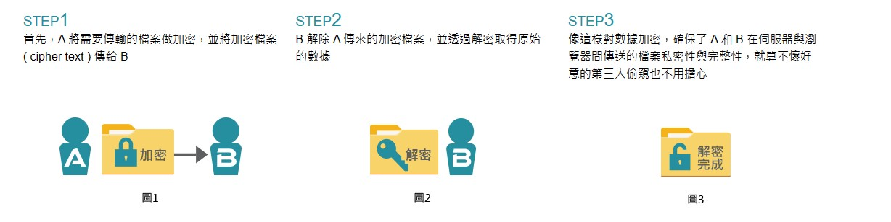
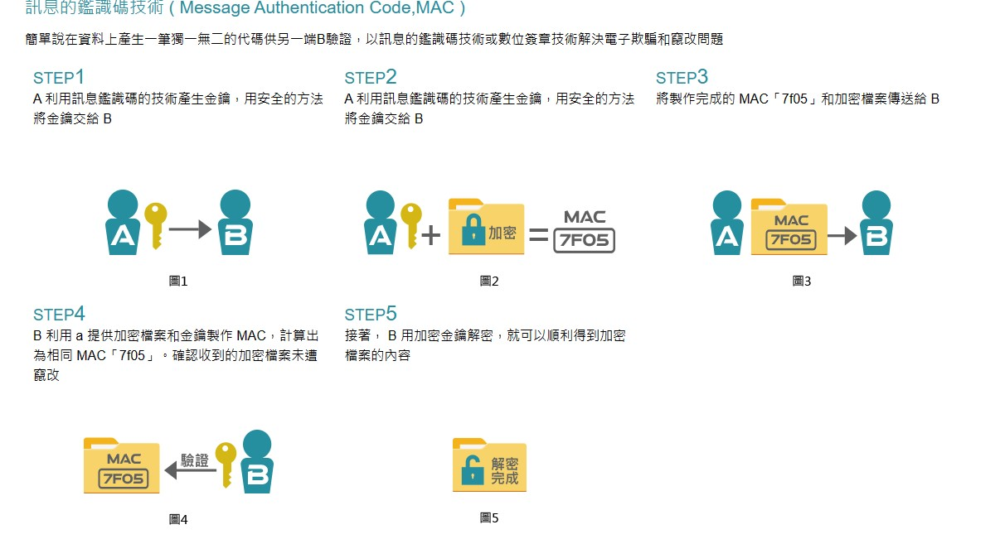
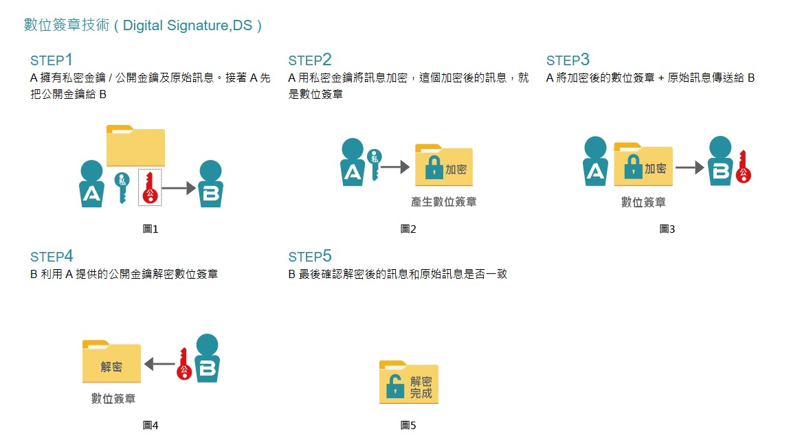
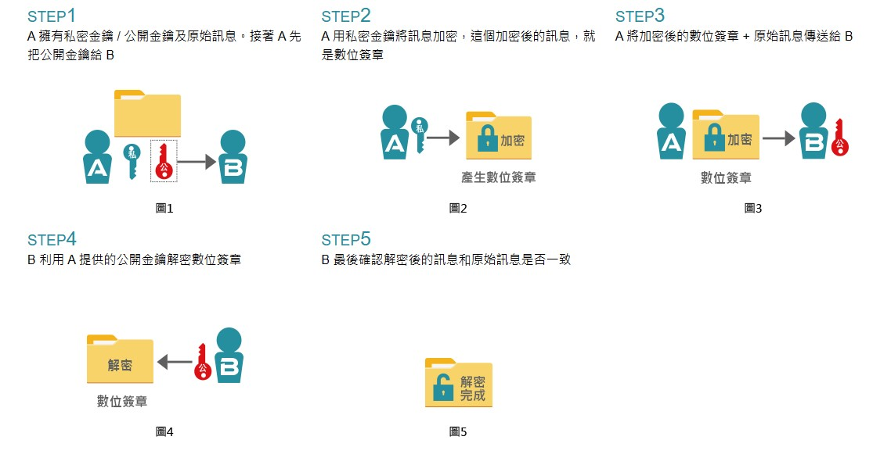
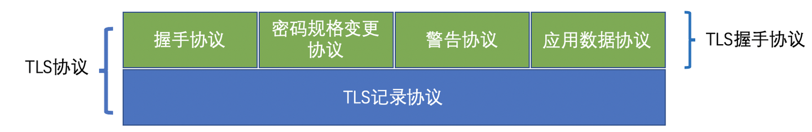

# 啥
SSL/TLS 是一種安全加密協議，主要保護兩溝通端，溝通過程，以及確保身分不會被冒充。
在最一開始由 SSL 先被提出來可以參考以下…
1994 年，NetScape 公司设计了 SSL 协议（Secure Sockets Layer）的 1.0 版，但是未发布。
1995 年，NetScape 公司发布 SSL 2.0 版，很快发现有严重漏洞。
1996 年，SSL 3.0 版问世，得到大规模应用。
1999 年，互联网标准化组织 ISOC 接替 NetScape 公司，发布了 SSL 的升级版 TLS 1.0 版。
2006 年和 2008 年，TLS 进行了两次升级，分别为 TLS 1.1 版和 TLS 1.2 版。最新的变动是 2011 年 TLS 1.2 的修订版。
參考資料：https://www.lixl.cn/2021/062048017.html#toc-heading-1
SSL/TLS 可以用在 https, SMTP, FTP…

# 啥是憑證
憑證是一種可以被信任的證書，為什麼它可以被信任。由於他是由雙方都可以信任的第三方所發放的證書，所以當我看到這一份證書時，就可以確認他沒有被偽裝。簡單來說，只要證書可信，公鑰就是可信的。
# 運作過程
http 由於是明文的傳輸，因此需要一種方法確保溝通中的安全，也就是採取 SSL/TLS 的技術。
在參考資料中有說道，明文傳輸有三個大風險
- 竊聽風險（eavesdropping） : 雙方溝通的內容可以被竊聽
- 竄改風險（tampering） : 雙方隨時可以隨時竄改通信內容，當別人穿送資料的時候，再一次確認卻不承認有傳送資料的這件事
- 冒充風險（pretending） : 雙方隨時可以被其他人冒充
在加密中可以確保三樣安全性
- 加密傳輸：在加密過程中，不會被其他人監聽
- 身分證書：不會被客戶端或者伺服器端不會被其他人偽裝
- 校驗內容：在溝通時就會發現資料被竄改
-
竊聽 (eavesdrop)
竊聽指的是當我和其他人溝通的時候，有人在竊聽我們之間的溝通內容。這樣會導致我們被偷走了資料還不知道。而解決的方式是用加密的方式溝通，只有傳輸雙方知道的內容才會避免。

-
欺騙 (spoofing) 以及攢改 (falsification)
意旨 A 傳輸給 B 時，沒辦法確定是否 B 為第三方的偽裝，這個是欺騙。當 A 傳輸給 B 的時候，實際上是傳給第三方再傳給 B, 這樣稱為竄改。解決的方法必須用數位簽章還有訊息鑑別馬的方式。

 -
抵賴 (repudiation)
抵賴意旨說當 A 傳給 B 資料時，再確認的時候卻說 A 並沒有傳輸，造成可以竄改通信內容。解決還是用數位簽章的方式。

# TLS 的架構
TLS 可以分層兩層，底下那層紀錄下第一次溝通所確定使用的一些資料比如加密方法，然後使用對稱密碼對資料進行加密。
上層可以分成四個部分：握手協議，密碼規格變更協議，警告協議，應用數據協議。
- 握手協議：在第一次溝通時，雙方商議密碼算法並且共享密鑰，證書認證之類的…
- 密碼規格變更協議：跟傳送變更密碼方式
- 警告協議：當有警告訊息時，傳送給對方
- 應用數據協議：將負責由 TLS 要乘載的資料加密，並傳送。

# TLS 中，公鑰與會話金鑰 (session key) 有甚麼樣的關係
公鑰是放在公開的地方，因此要怎麼確認公鑰確實代表我們要傳送的端點。通常公鑰會隨副一份憑證，而憑證是由雙方可信任的第三方所產生的，並且她是唯一的。
而公私鑰採用的是非對稱加密，如果溝通的資料都是透過如此傳輸，效率會非常的慢。因此公鑰是拿來產生 session key 後，雙方在用 session key 去溝通，每一次溝通都會重新產生一組，而且他們是對稱的加密方法，固然會快很多。
所謂的握手階段指的是：
- 客戶端向伺服器端索取公鑰
- 雙方協商會話密鑰
# 握手階段
握手階段有四個階段，在雙方溝通的過程中，都是明文的方式。

# 1. 客戶端發出連線請求
客戶端送給伺服器會有這些訊息
客戶端能使用的SSL/TLS 1.0, 1.1 or 1.2溝通協議 | |
給一個自己生成的隨機數, 之後產生session key 使用 | |
可以支持的加密方式, RSA 或其他非對稱加密方式。 | |
支持壓縮方式 |
資料說這邊客戶端並不會傳送目的端的域名，所以一台伺服器只能有一個憑證。
# 2. 伺服器端回應客戶端請求
伺服器傳送給客戶端這些訊息
確認使用的SSL/TLS溝通協議, 如果不支持的話就結束通話。 | |
生成一個隨機數, 用於對話加密 | |
確認使用的加密方式 | |
伺服器憑證 |
資料說有時候還會在這邊要求客戶端提供 "客戶端證書", 確保伺服器只對某些用戶提供服務。
# 3. 客戶端回應
如果伺服器的憑證並不是可被信任的，就會通知使用者是否要繼續溝通。
再產生一個隨機數, 並用伺服器公鑰加密 | |
溝通方式需要改變, 代表後面的溝通都用雙方溝通的加密方式對話。 | |
發送hash 代表握手階段結束, 並且也是前面發送所有內容的hash, 用來給伺服器較驗 |
# 4. 伺服器回應
溝通方式確認改變, 確認收到之後都用加密方式對話 | |
通知握手結束, 也是前面所有內容的hash值 |
在這之後就是 Http 的溝通範圍了，完全交給他了。不過在溝通的過程中都會使用 session key 對話。
以上握手部分都是參考這個網站
# Reference
讀者有興趣可以到以下網站了解更多。
- no.1
- no.2
- no.3
- no.4
- no.5
- no.6